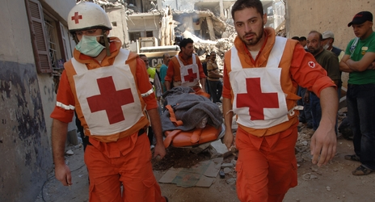
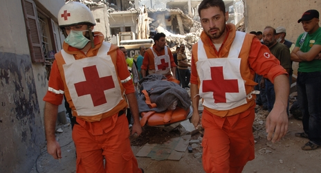

LEBANESE RED CROSS
Emergency? Call 140
A Glimpse:
The Lebanese Red Cross (LRC) is a national society that was established on July 9, 1945 as an independent National Society. In 1946, it was recognized by the Stateas a public nonprofit organization and as an auxiliary team to the medical service of the Lebanese Army.
In 1947, the Lebanese Red Cross joined the International Red Cross and Red Crescent Movement, which today has affiliates in 178 countries,and became a member of the International Federation of the Red Cross and Red Crescent Societies. Furthermore, it is a founding member of the Secretariat General of the Organization of the Arab Red Crescent and Red Cross Societies.
The Lebanese Red Cross Society is led by volunteers, whose mission is to provide relief to victims of natural and human disasters, and help people prevent, prepare for and respond to emergencies, and to mitigate the suffering of the most vulnerable.
The fundemantal principles of the lebanese red cross
Humanity - Imparitality - Neutrality - Independence - Voluntary Service - Unity - Universality
The Lebanese Red Cross is a nationwide society that accomplishes its mission through the following centers and units:
- 38 Medical - social centers
- 46 EMS centers and 4 dispatch rooms
- 32 branches or local committees
- 35 Youth clubs
- 13 Mobile clinics
- 12 Blood transfusion centers
- 1 faculty and 4 Nursing institutes
- 1 Orthopedic workshop
- 1 Disaster Management Unit and 12 team